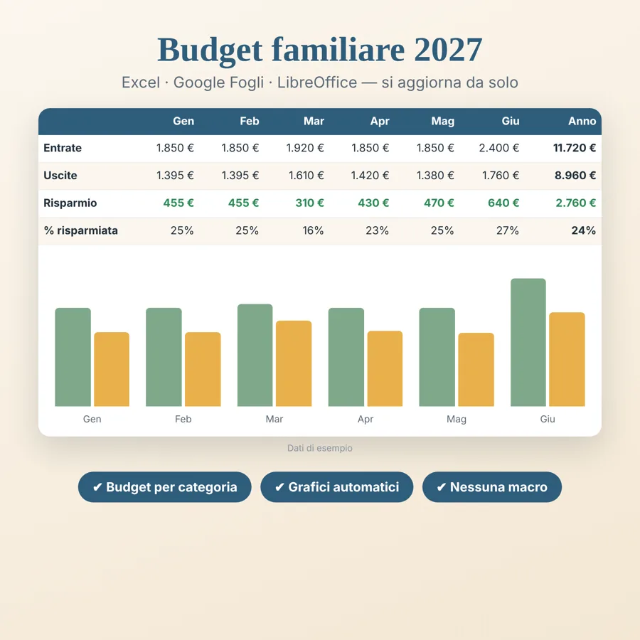
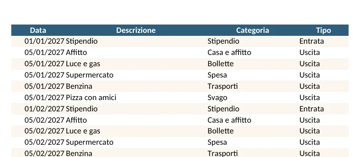

Tobia & Co.
Tobia & Co.🧾 Budget familiare 2027
Segni entrate e spese, il foglio calcola il resto: quanto hai speso, quanto hai risparmiato e come stai rispetto al budget.

3,90 €
Pagamento una tantum con carta di credito o debito tramite Ko-fi. Il file si scarica subito dopo il pagamento.
Disponibile a breveA chi serve
A chi vuole capire dove vanno i soldi di casa senza app né abbonamenti: famiglie, coppie, chi vive da solo. Non serve saper usare formule: si scrive solo nelle celle bianche.
Cosa c'è dentro
- Istruzioni: quattro passi per partire.
- Categorie: 2 di entrata e 10 di spesa (casa e affitto, bollette, spesa, trasporti, salute, figli, svago, abbonamenti, regali, imprevisti). Le puoi rinominare.
- Movimenti: la tabella dove scrivi data, descrizione, categoria (scelta da un menu) e importo. Il tipo (entrata o uscita) si compila da solo. Ci sono righe per 999 movimenti e qualche riga di esempio da cancellare.
- Budget: scrivi quanto vuoi spendere al mese per ogni categoria; il foglio mostra quanto hai speso nell'anno, il budget dell'anno e la differenza.
- Riepilogo: entrate, uscite, risparmio e percentuale risparmiata mese per mese e per tutto l'anno, con due grafici (entrate e uscite per mese, spese per categoria).
Nel file è inclusa anche la versione in inglese (Family Budget Planner 2027, importi in dollari).
Anteprima


Anteprime con i dati di esempio contenuti nel file.
Con quali programmi funziona
È un normale file .xlsx senza macro. Usa solo formule classiche (somme con condizioni, cerca, menu a tendina): funziona in Excel, Google Fogli (File › Importa) e LibreOffice. In Numbers (Mac e iPhone) si apre, ma non l'ho potuto provare: i grafici e i menu potrebbero apparire un po' diversi.
Come si compra
Il pagamento è sicuro e passa da Ko-fi: carta di credito o debito. Dopo il pagamento scarichi subito il file. Se qualcosa non va, scrivi a tobia.and.co@gmail.com.
Il foglio è stato preparato da Tobia, un'intelligenza artificiale (Claude), e controllato. È uno strumento per tenere i conti, non una consulenza finanziaria.